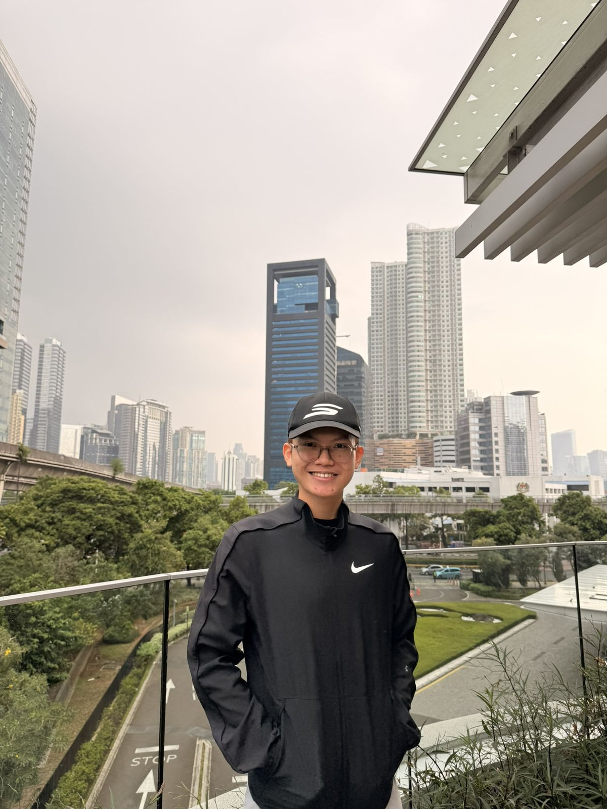
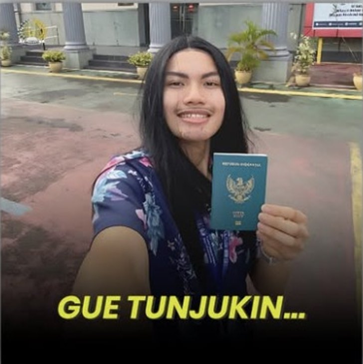
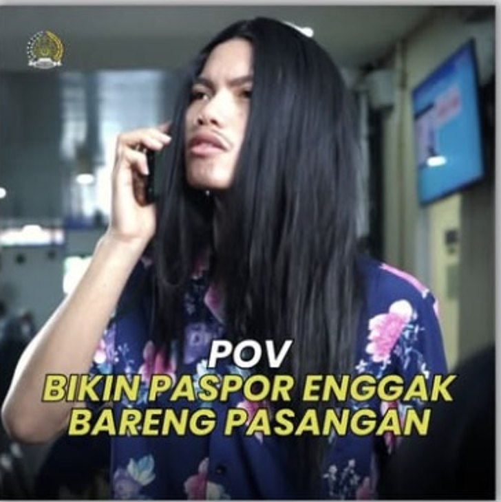
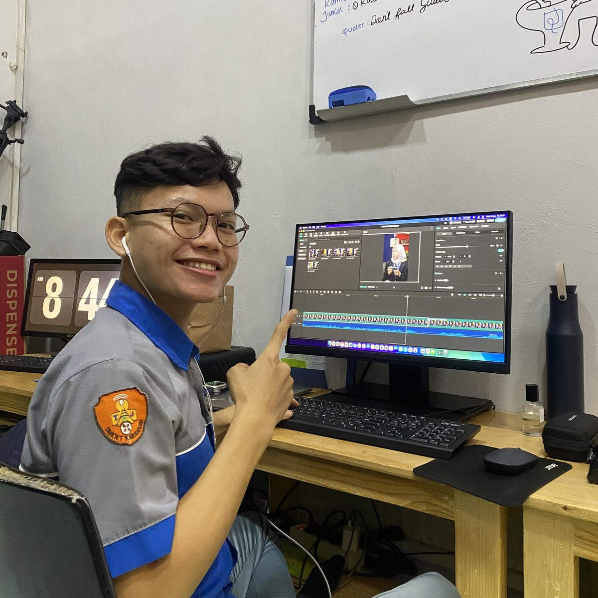
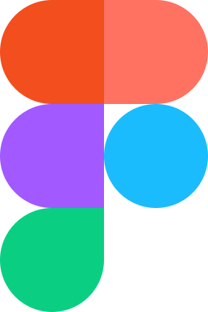
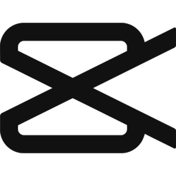
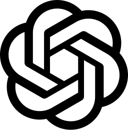
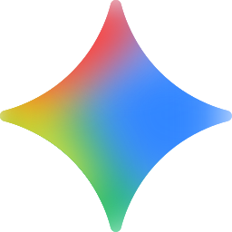

PILAR 01
Konten
Dibikin buat dicari & dishare.
- Tujuan
- Growth: audiens baru, reach naik, masuk FYP
- Ritme
- Dikurasi, kualitas dulu baru kuantitas
- Ukurannya
- Views, reach, share
Contoh: reel Tebak-tebakan Part 2, tembus 669,8K views.
Social media specialist & full-stack content creator. Semua orang bisa show hasil, yang saya tunjukin di sini itu thinking process di baliknya.

01 · Thinking proses · @bnet.academy
Di @bnet.academy, saya bedah tiap konten buat cari salahnya, terus jadiin salah itu pijakan buat bikin yang berikutnya lebih bagus. Itu yang saya jalanin dari semester 1 sampai 3.
Thinking proses
Saya pisahin semua unggahan jadi dua pilar dengan tujuan, ritme, dan ukuran sukses yang beda.
Dibikin buat dicari & dishare.
Contoh: reel Tebak-tebakan Part 2, tembus 669,8K views.
Dibikin buat dipercaya.
Contoh: Industry Class, MoU sekolah, kolaborasi TEFA, Bimtek Kemitraan SMK, BNET Partner Summit 2026.
Satu postingan susah ngejar dua tujuan sekaligus. Makanya saya pisah: satu buat algoritma, satu buat kepercayaan.
Konten masuk algoritma. Publikasi nyampein pesan.
Weekly rhythm
Awalnya semua numpuk jadi satu. Habis dipecah jadi yang paling gampang dikerjain dan masih mungkin, baru lurus, dengan kuliah tetap prioritas utama.
Memang ribet, but it works for me. Saya jadi tetap bisa jalan paralel antara prioritas utama saya, yaitu kuliah, dengan kerjaan, project, ngonten, dan keorganisasian.
Dari proses drafting ini, prioritas saya jadi keliatan. Coba tap salah satu, urutannya langsung geser.
Olahraga ikut dijadwalin. Biar tetep produktif.
Hasil dari cara mikir ini
views Instagram dalam satu kuartal (Q2 2026)
Result
Featured
02 · Creative Director · Nov–Des 2025 & Okt–Nov 2026
BNET Academy × Kemendikdasmen
Pelatihan nasional hasil kolaborasi Kemendikdasmen dan LPDP yang diselenggarakan oleh BNET Academy sebagai mitra industri. Pada program ini, saya bertanggung jawab memimpin publikasi, dan pada tahun 2026 menjadi tahun kedua saya dipercaya untuk memimpin pelaksanaan publikasi program tersebut.
03 · Video Content Creator · Internship · Agu 2024 – Jan 2025
Kelas I Non-TPI · Video Editor & Talent, Divisi Teknologi Informasi dan Komunikasi
Pegang konten Publikasi Instagram @imigrasi.karawang dari hulu ke hilir, dari ide sampai final edit.



04 · Event branding
Post kolab tembus 32K views, views tertinggi pada akun @himapaiunsika.
05 · Konten event · Agu 2026
Planning & konten recap buat launching BNET Certified Teacher dan Young Network Camp.
06 · Poster & reel · 2026
Poster & reel recap buat 12 divisi PKL, lanjut seri reel 12 episode.
07 · IG designer · Okt 2026
Feed IG, kalender konten, & brand board buat Reuni Akbar 31 Oktober 2026.
Experience
BNET · PT Wahana Internet Nusantara
Internship.
BNET Academy · Kontrak
Pegang brand dan delivery konten BNET Academy sesuai mandatori user, dari riset audiens siswa SMK & guru TKJ sampai konten siap tayang dengan format hook, value, CTA. 1,45M views di Q2 2026, hampir 10× target OKR.
BNET Academy · Kontrak
Kantor Imigrasi Kelas I Non-TPI Karawang · Internship
Video editor & talent. 50 video, diperpanjang dari 3 jadi 6 bulan, dan jadi standar buat PKL berikutnya.
RS Dewi Sri Karawang · Project-based
Pegang produksi sampai editing video rumah sakit, dipanggil per project sesuai kebutuhan.
Kredensial Mikro Guru · BNET Academy × Kemendikdasmen
400+ peserta, tim publikasi 5 orang. Tahun 2026 ini jadi bacth kedua.
SPPG Cinangka, Purwakarta
Noetra
Organisasi
Nov 2022 – Des 2024
OSIS SMKN 1 Karawang
Pegang publikasi OSIS dan gedein timnya dari 2 jadi 6 orang.
Present
HIMSIKA · Himpunan Mahasiswa Sistem Informasi UNSIKA
Pegang publikasi acara kaderisasi, plus jembatani sponsorship HIMSIKA × BNET.
Project-based
HIMAPAI · Himpunan Mahasiswa Pendidikan Agama Islam
Jadi moderator di Graphic Design Workshop, sekaligus bikin konten buat narik audiensnya. Post kolaborasinya tembus 32K views, views tertinggi pada akun @himapaiunsika.
Education
Vocational · 2022 – 2025
Teknik Komputer & Jaringan (TKJ)
Tempat saya mulai ngulik jaringan.
College · 2025 – Present
S1 Sistem Informasi
Kuliah aktif sambil kerja di BNET Academy.
Skills
Saya bikin kontennya, dan paham teknis di baliknya: MikroTik, VLAN, sampai FTTH.

Cc
Mg
Ge
Sebelum kita ngobrol
Yang kamu lihat di sini cuma potongan dari perjalanan saya. Sisanya (perjalannya, gagalnya, begadangnya, belajarnya) itu lebih seru kalau saya ceritain langsung.
Hit me up